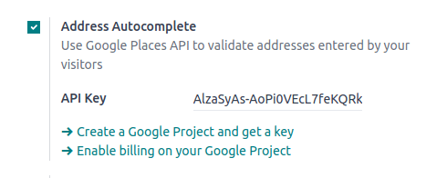

Completado automático de direcciones¶
Puede utilizar la API de Google Places en su sitio web para comprobar que las direcciones de entrega de sus usuarios existen y que son comprensibles para el transportista. Gracias a esta API, los desarrolladores pueden acceder a información detallada sobre lugares mediante solicitudes HTTP. La función de autocompletado predice una lista de lugares cuando el usuario comienza a escribir una dirección.

Para hacerlo, vaya a y habilite la función Autocompletar dirección en la sección de SEO.
Escriba su clave API de Google Places en el campo Clave API. Si no tiene una, cree la suya en la consola de Google Cloud y siga los pasos que se encuentran a continuación.
Paso 1: habilitar la API de Google Places¶
Cree un nuevo proyecto: para habilitar la API de Google Places primero debe crear un proyecto. Para ello, haga clic en Seleccionar un proyecto en la esquina superior izquierda, después en Nuevo proyecto y siga las instrucciones para configurarlo.
Habilite la API de Google Places: vaya a APIs y servicios habilitados y haga clic en + HABILITAR APIS Y SERVICIOS. Busque «API de Places» y selecciónela, luego haga clic en el botón «Habilitar».
Nota
Los precios de Google dependen del número de solicitudes y su complejidad.
Paso 2: crear las credenciales de la API¶
Vaya a APIs & Services –> Credentials (API y servicios –> Credenciales).
Cree sus credenciales: para crear sus credenciales, vaya a Credenciales, haga clic en Crear credenciales y seleccione Clave API.
Restringir la clave API (opcional)
Por motivos de seguridad, puede restringir el uso de su clave API. Vaya a la sección Restricciones de API para especificar a qué APIs puede acceder su clave. Para la API de Google Places, puede restringirla para permitir solo solicitudes desde sitios web o aplicaciones en específico.
Importante
Guarde su clave API, cópiela y almacénela en un lugar seguro.
No la comparta de forma pública ni la muestre en el código del lado del cliente.